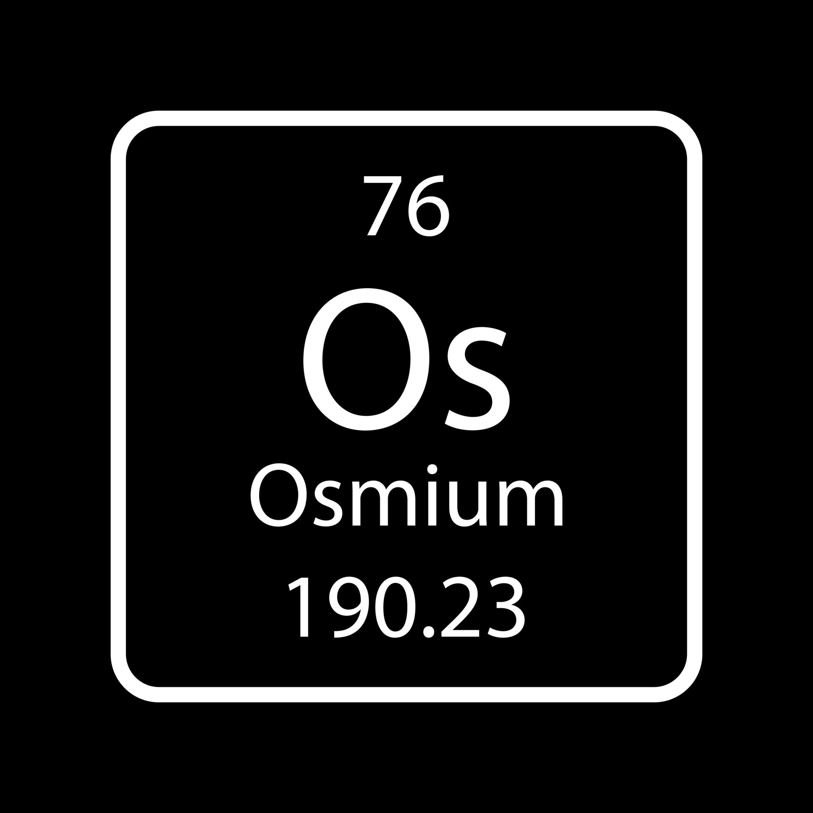
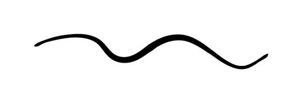
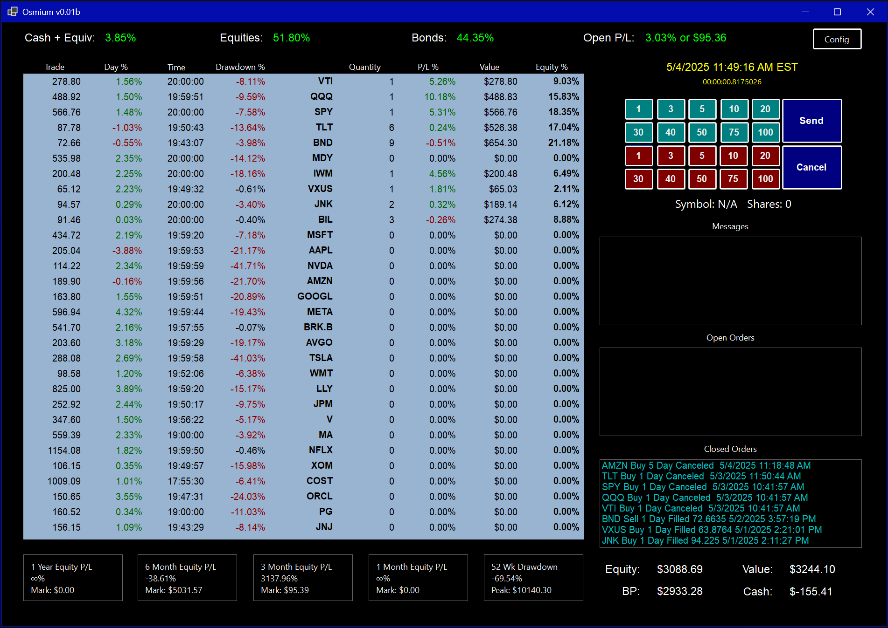

Osmium is among the rarest elements in the Earth's crust, making up only 50 parts per trillion. It is a hard, brittle, blue-gray metal, and the densest stable element—about twice as dense as lead and Its stiffness surpasses that of a diamond.

While osmium itself is valuable, its true power often lies in its interactions with other elements. For instance, when alloyed with platinum, it creates some of the hardest, most durable materials available.
Osmium is the precision portfolio allocation tool that I always wanted. It is for investing in a determined set of markets via positions that may ebb and flow with time. The focus is almost exclusively on allocation of equity. No charts, no level 2. nothing to distract from basic information any investor can use to free themselves from spreadsheets and repetitive export/import rituals. As a result, Osmium will not be useful for some types of traders and investors. However, if you want a precise, real-time view of asset allocations and the ability to quickly effect those allocations in a simple user interface. Osmium may be a tool you want to explore.
Osmium sits on Alpaca. To use it, you will need an Alpaca account, but Osmium can easily be used with an Alpaca paper trading account in order to evaluate its usefulness and get a feel for its responsiveness and how it calculates data.
- Download and extract the binaries for Windows. (Below)
- Run the Osmium.exe file.
- The interface will come up blank which is normal. It is writing some prerequisite encrypted config files in the extract directory.
- Click the "config" button in the upper right.
- Paste your Alpaca keys into the text boxes. If you are using "live" keys, check the box on the right to indicate that.
- Insert a comma delimeted list of symbols as instructed on the config page. This can be edited at any time without the need to re-enter keys.
- All keys and config data are stored using AES encryption and will not repopulate in the config dialog, They cannot be seen after they are saved as a security precaution.
- The symbol config will repopulate from the encrypted file and can be edited and re-saved. As long as the key textboxes are empty, the keys will not be overwritten.
- To trade: Click the Ticker Symbol (it will highlight), Click the desired quantity button, Click Send. All orders are MARKET DAY.
This software may be used under the
Apache 2.0 license and is
AS IS. No warranty or guarantee of functionality is made. Trading any security is risky and
Osmium is to be used at your own risk. Always test it on a paper account. Happy Investing!

Osmium is best used with dedicated tools for scanning, fundamental analysis, charting, news, etc.